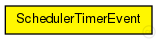
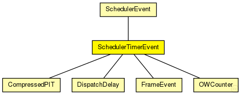

This documentation is released under the Creative Commons license
This documentation is released under the Creative Commons licenseMessage used for events of TTEScheduler that are triggered after a specified time (timer). Should be created with message kind SchedulerMessageKind = TIMER_EVENT
See also: SchedulerMessageKind, SchedulerEvent
Author: Till Steinbach
The following diagram shows usage relationships between types. Unresolved types are missing from the diagram.
The following diagram shows inheritance relationships for this type. Unresolved types are missing from the diagram.
| Name | Type | Description |
|---|---|---|
| SchedulerEvent | message |
Message used for events of TTEScheduler with SchedulerMessageKind = NEW_CYCLE |
| Name | Type | Description |
|---|---|---|
| timer | unsigned int |
Time after that the event is triggered in number of ticks |
// // Message used for events of TTEScheduler that are triggered after a specified time (timer). // Should be created with message kind SchedulerMessageKind = TIMER_EVENT // // @see SchedulerMessageKind, SchedulerEvent // // @author Till Steinbach message SchedulerTimerEvent extends SchedulerEvent { // Time after that the event is triggered in number of ticks unsigned int timer; }
This documentation is released under the Creative Commons license